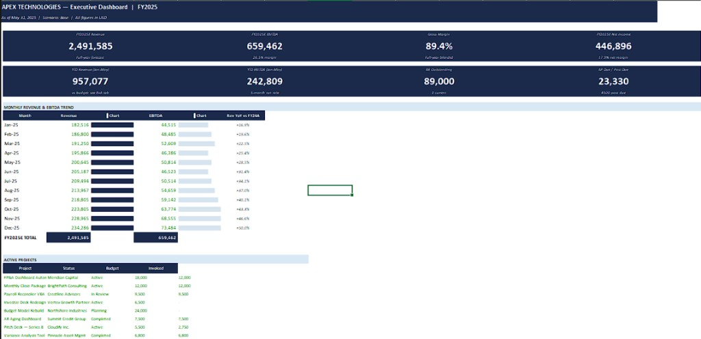

3 Statement SaaS Financial Model with Scenario Analysis & Dashboard
A fully linked income statement, balance sheet, and cash flow with MRR waterfall, scenario toggles, and an executive dashboard for KPIs and monthly trends.

This workbook is a complete 3 statement SaaS model built in Excel. Income statement, balance sheet, and cash flow are linked end to end, with a dedicated Assumptions tab driving churn, pricing, headcount, and scenario selection across every output tab.
The revenue build includes an MRR waterfall with new business, expansion, and churn, plus segment revenue for core SaaS, add on modules, and professional services. SaaS metrics like ARPU, LTV, and CAC roll up automatically from the same inputs.
Scenario analysis compares Base, Downside, and Upside side by side. Select a scenario on the Assumptions tab and every forecast, KPI, and dashboard view updates without manual relinking.
The executive dashboard summarizes FY revenue, EBITDA, gross margin, and net income alongside a monthly revenue and EBITDA trend with embedded bar charts, plus an active projects tracker. Formatting follows audit friendly conventions so a founder or finance lead can update assumptions and share outputs with investors on short notice.